Overview
The Case Tracker allows external users who are not registered users in ProcessMaker to track the progress of cases. The Case Tracker is designed to only show relevant information about a case to the external users, while hiding information which shouldn't be shared. In order to view the progress of a case through the Case Tracker, the external user enters a case code (which by default is the case number) and four character PIN (Personal Identification Number) which is randomly generated by default for each case.
The Case Tracker can be configured in each process to show external users the following information about cases:
- The process map showing completed tasks, currently open tasks and future tasks in the case,
- The routing history, showing when tasks were started and completed and which users worked on them,
- Messages sent out by the case,
- Dynaforms and Input Documents from the case.
Defining Case Tracker Information
Open the process that will be tracked by an external user. In the main toolbox, locate the Case Tracker button and click on it to open a new window.

In this new window, several options will appear. As shown in the image below, the case tracker defines what kind of information the external user is able to review. The external user can see either the whole process map or only defined stages in the process. Likewise, the external user can have access to the routing history or message history, or both.

Case Tracker Properties
In the case tracker window, the user can set the following options:

- Processmap: Shows which tasks are completed, in progress and pending/not executed. Users can track where the case is currently located in the process.
- Routing History: Shows the tasks and sub-processes that have been completed or are currently open and which users were assigned to work on them.
- Messages: Shows the messages that were sent during the execution of the case.
Case Tracker Objects
It is possible to define which process objects can be tracked by the external user in the case tracker:
Available Objects: A list of the available Dynaforms and Input Documents from the process.
Warning: The Case Tracker currently does not support Output Documents and External Steps as assigned objects. This is a known issue that will be fixed in upcoming ProcessMaker versions.
- Assigned Objects: A list of the objects chosen by the process designer that can be viewed by an external user through the Case Tracker.
To assign an object, select it from the list of available objects on the left. Then, drag the object from the list of Available Objects and drop it into the list of Assigned Objects in the right-hand column.
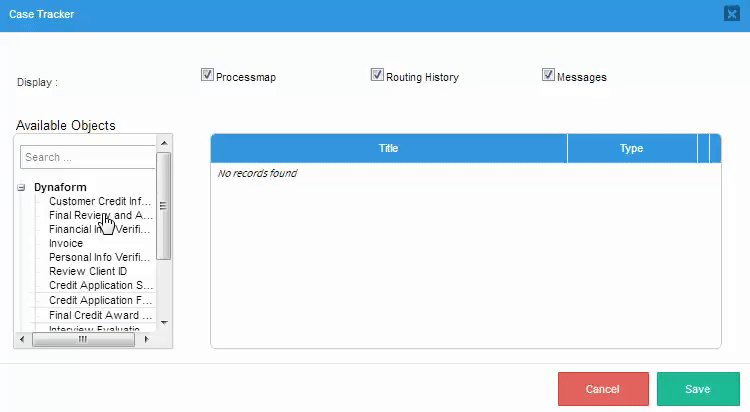
Note: The Case Tracker must be configured to show at least one element in the process (Process Map, Routing History, Messages, Dynaforms or Input Documents) or it will not allow users to login to view the case.
When a Dynaform or Input Document has been added as an assigned object to the case tracker, then it is possible to also add a condition to the object.

If the condition evaluates to true, then the external user will be able to view the object in the case tracker. If it evaluates to false, then the object will not be shown to the external user.

Finally, click the Save button to save the changes, or click on Cancel to discard any changes in the Case Tracker.
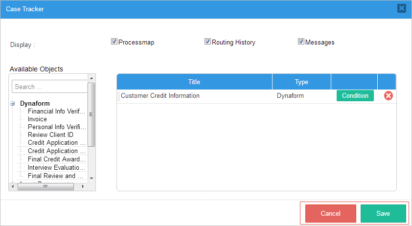
Case Tracker Example
First, create a process where a Dynaform that obtains information about the client will be assigned to the first task. In this example, the process "Credit Card Application" will be used. The Dynaform "Credit Application Form" will be assigned to the second task. The image below shows the process.
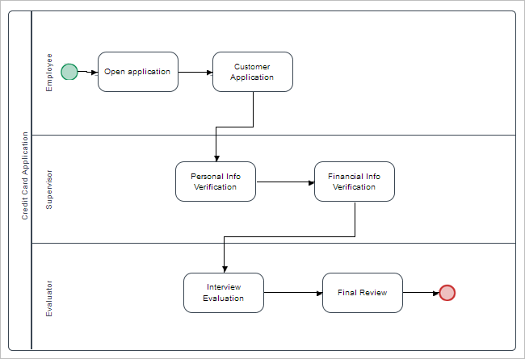
Go to the Case Tracker, and a new modal window will open where the user can choose if they want to view the Process Map, Routing History or Messages. In the Available Objects list, drag the "Credit Application Form" Dynaform to the assigned objects and click on Save.

Save the process and exit. Go to the process and right click on it to enable the debug mode. This will allow external users to see what is happening with the case.
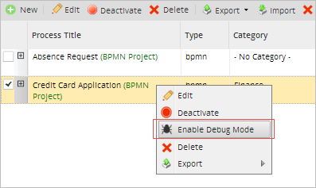
Log out and initiate a new session as an employee assigned to the case, go to Home, then New Case and start the "Credit Card Application" process. The image below shows the Dynaform filled in with the information required from the client. After it is filled in, it must be submitted to be passed on to the next task.
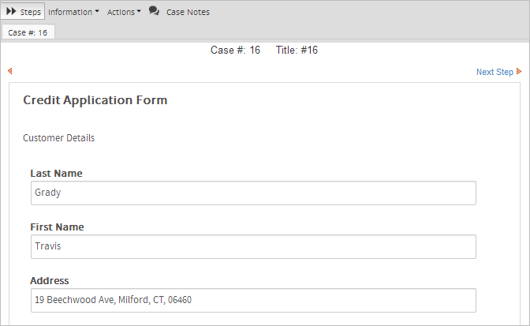
After clicking on Submit, information about the recently created Dynaform is displayed on the right side of the screen. In this panel, the PIN of the new case will be displayed, which in this case is "3LJ8".
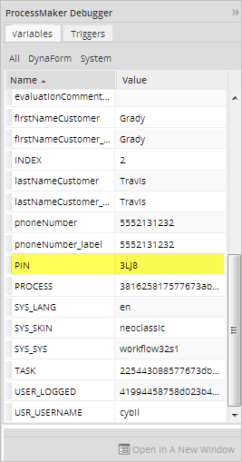
Now, access the Case Tracker with the case number and the PIN. For this, the last part of the URL must be changed, like:
http://{pm-server}/sys{workspace}/en/neoclassic/tracker/login
The case tracker site will appear, where the case number (16) and the PIN (3LJ8) are needed to log in.
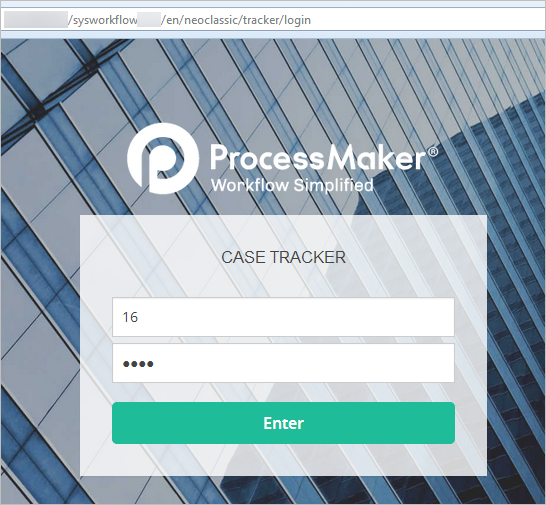
In this new site, the user can find four options in the top menu. The first one, My Case Status, displays where the case is in the process. The color codes of each status (Task in Progress, Completed Task, Pending Task/Not Executed and Parallel Task) are defined in the small window in the upper right corner. This is important information for the user, because here they can see if there are any problems with the case.
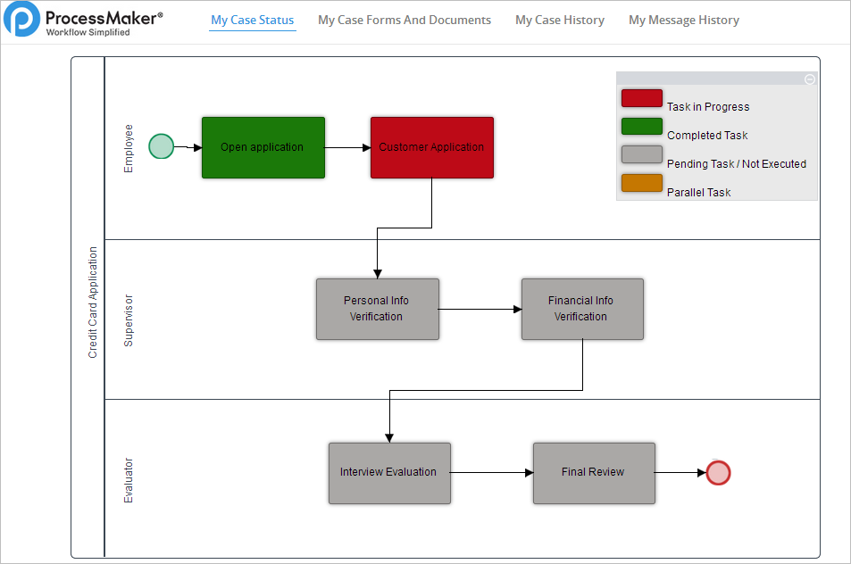
The second tab lists all the forms and documents filled in. In the My Case Forms and Documents panel, the user can click on View to see the documentation filled in for their particular case.
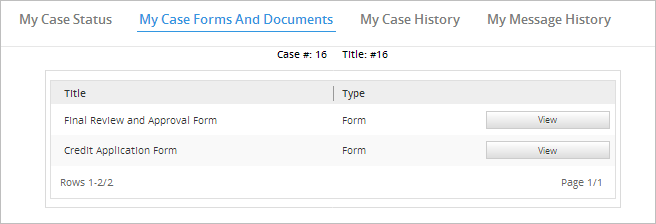
The third tab, My Case History, shows everything done with the case so far. Here specifically, the user can view the tasks completed.
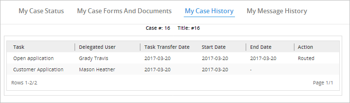
Finally, the My Message History panel allows the user to see the messages passed between processes and messages sent to the user. Also, this tab lists the dates of each task and the time it took for a task to finish.
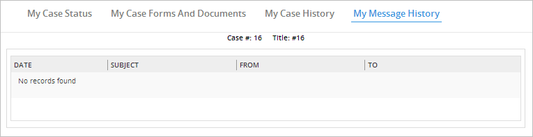
Accessing the case code and PIN
External users who wish to follow the progress of a case through the Case Tracker, will need to enter a case code and PIN to view to case. By default, the case code is the case number which is available in the @@APP_NUMBER system variable. The PIN for each case is 4 characters (numbers and upper case letters) which is randomly generated by ProcessMaker when new cases are created and is stored in the @@PIN system variable.
Both the APP_NUMBER and PIN variables can be viewed in ProcessMaker by users who open a case when Debug Mode is enabled, but it is recommended to display this information to the user through Dynaforms, Output Documents or email messages. Registered users who are assigned to the case or have access through process permissions can view Dynaforms inside ProcessMaker, but external users who can't login normally to ProcessMaker will need to be sent the case code and PIN in a Output Document file or an email message, so they can open the case through the Case Tracker.
To display the APP_NUMBER and PIN in a Dynaform, create text fields associated with the variables and then create a trigger which fired before the Dynaform which to assign the @@APP_NUMBER and @@PIN to those variables.
For example, create two text fields in a Dynform which are associated with the "caseCode" and "casePIN" variables. Then, create the following trigger:
@@casePIN = @@PIN;
To display the case number and PIN in an Output Document or email message, edit its template file and add the following text:
Where http://example.com is the domain of the processmaker server.
If editing the template's HTML code, then use the following code:
Customizing the case code and PIN
The setCaseTrackerCode() function can be used in a trigger to provide a custom case code and PIN for a case. Depending on the circumstances, it may not be recommended to give an external user the case number, because case numbers are numbered sequentially. For example, an external user applying for a job might guess if the case code is 5, that she is the fifth applicant for the job. To hide the case number from the external user or provide a code which is easier to remember, it is recommended to set a custom case code to be used in the case tracker.
It also might be desirable to create a custom PIN for the case, either to provide a more memorable PIN or for greater security. The 4 character PIN provided by ProcessMaker by default is easy to crack with a brute force attack, so it recommended to create a longer PIN if greater security is needed. The generateCode() function can be used to generate a longer semi-random PIN.
In the following trigger example, the case code is set to last name of the applicant, plus a number if the last name is already used in another case. In addition, the generateCode() function is used create a 10 character PIN which much harder to crack:
$newCode = strtoupper(preg_replace('/[^a-zA-Z0-9]/', '_', @@lastName));
$pin = generateCode(10, 'ALPHANUMERIC');
//if a case already has same code, then keep adding 1 until find a unique case code:
$counter = 0;
do {
$newPin = $pin . ($counter == 0 ? '' : $counter++);
$result = setCaseTrackerCode(@@APPLICATION, $newCode, $newPin);
} while ($result == 0);
If a custom case code is set, then this case code can be obtained for the current case with the following database query in a trigger:
$result = executeQuery($sql);
@@caseCode = empty($result[1]['APP_PROC_CODE']) ? @@APP_NUMBER : $result[1]['APP_PROC_CODE'];
Where caseCode is a variable associated with a Dynaform field or @#caseCode is used in the template for an Output Document or email message.